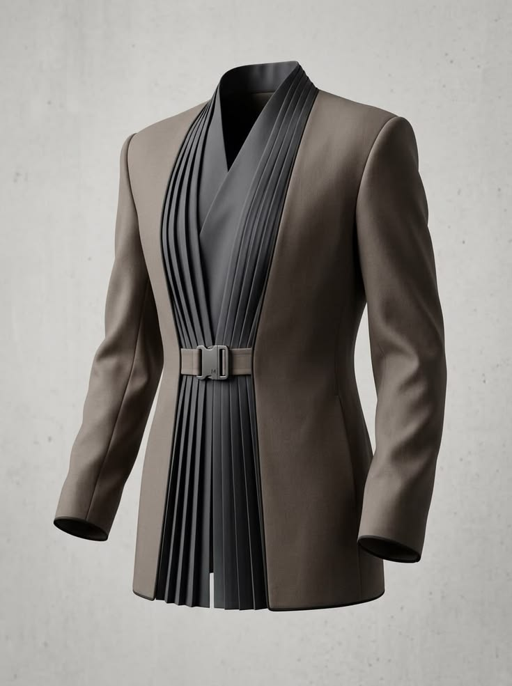

01
MADE FROM SCRATCH
Custom clothing
Bring us your idea, inspiration or occasion. We’ll work with you on the design, fabric and fit to create a piece that feels personal from the first sketch to the final fitting.
Enquire about custom clothing